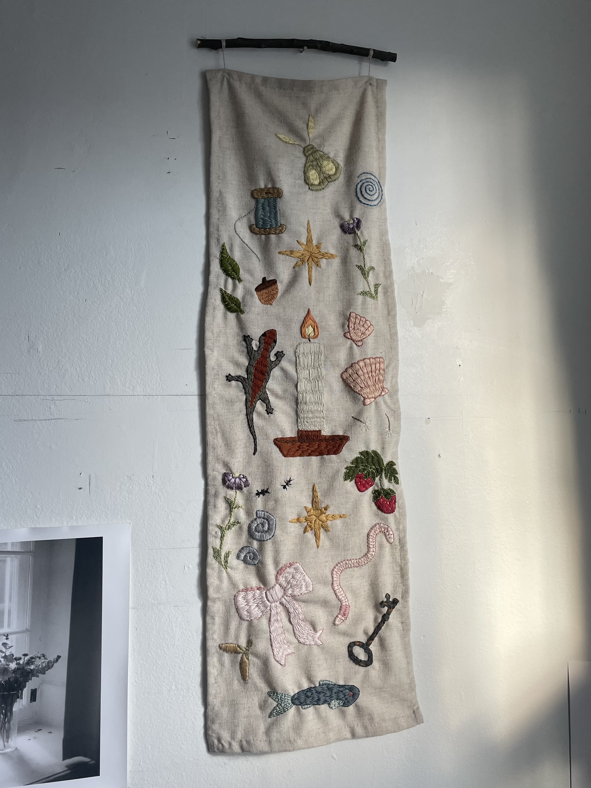
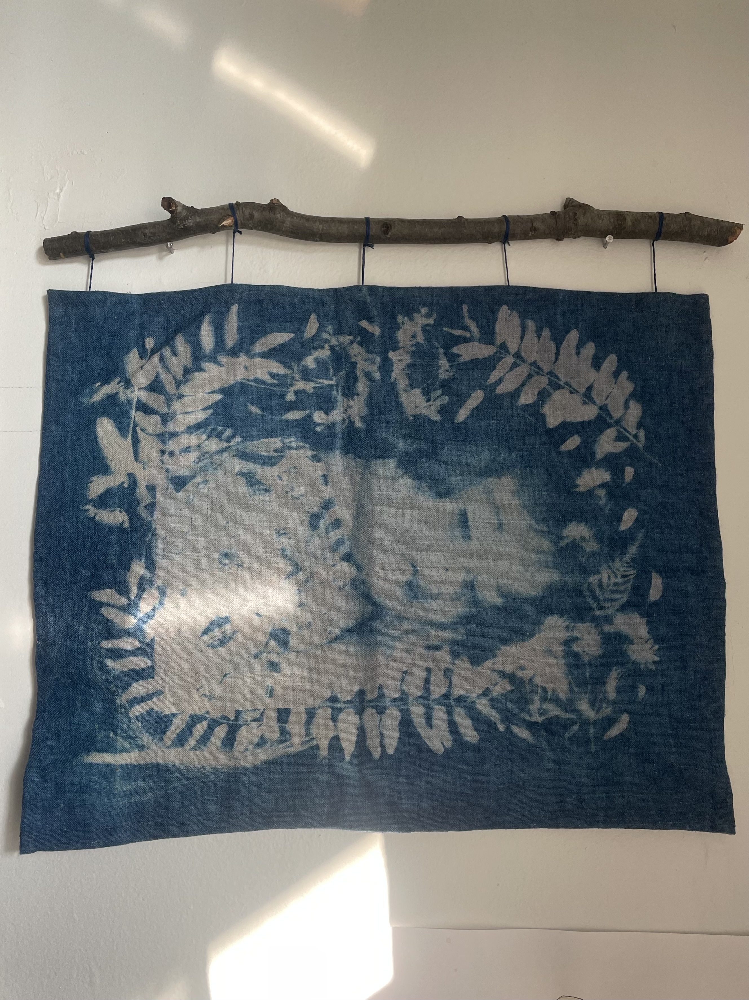

The primary goal for this project was to honour and reflect on a childhood spent mostly outdoors. I wanted a place to record the abstract elements of memory, and specifically the memories of being a little girl who was so in touch with and curious about the natural world around her. Part of what sparked this project is the fact that this version of childhood and of girlhood, which so many of us connect to and remember fondly, is somewhat replaced by an increasingly sanitized, digitized, and more restricted experience. This is also part of an ongoing line of inquiry into alternative archives and incorporating textile as a means of documentation.